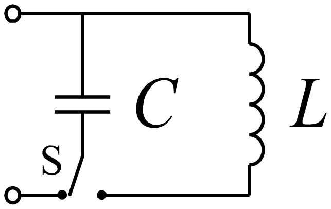
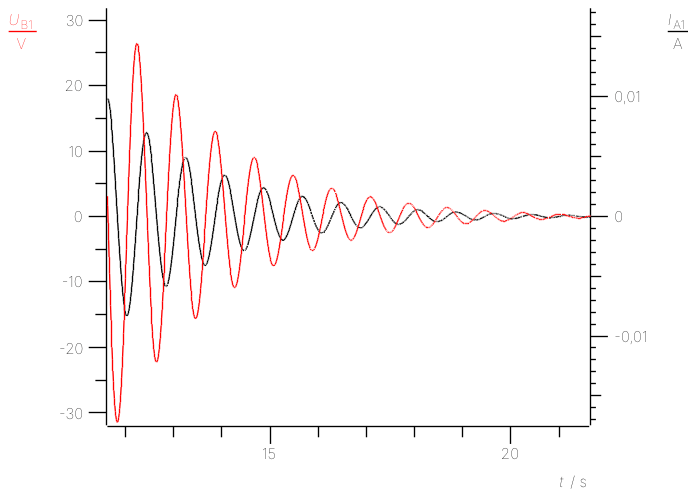
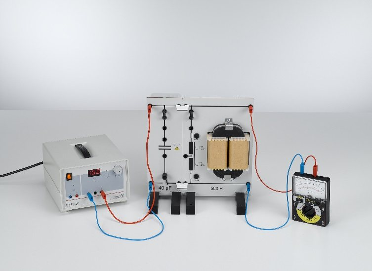

Erkin elektromagnit tebranişlar
1Işning maqsadi va kutilayotgan natijalar
Elektr tebraniş konturi bilan tanişiş, tebraniş konturining xususiy çastotasini (davrini) aniqlaş; konturda tok va kuçlanişning sönuvçi tebranişlarini tahlil qiliş.
Fan dasturidagi ta’lim natijalari: TN1 — Elektr va magnit zanjirlarini töğri yiğiş, ölçov asboblaridan (ampermetr, voltmetr, multimetr, osillograf) töğri va xavfsiz foydalaniş; TN2 — Fizik hodisalarni tajribada namoyiş qiliş, ölçov işlarini bajariş va natijalar aniqligini ta’minlaş; TN6 — Tajriba natijalarini nazariya bilan soliştiriş, sabab-oqibatni tahlil qiliş va ilmiy asoslangan xulosa çiqariş; TN14 — Tajriba ma’lumotlari asosida grafiklar (VAX, rezonans egri çiziqlari va h.k.) çiziş va tahlil qiliş.
2Kerakli jihozlar
- Yuqori induktivli çulğam (ğaltak)
- 40 mkF siğimli kondensator (S kalit bilan)
- Bir juft asos taglik, ulaş ştekerlari töplami
- Özgarmas tok (DC) ta’minlaş manbai
- Analog multimetr (noli örtada, 3 V diapazon)
- Qöl sekundomeri, 100 sm li qizil/kök ulaş simlari
3Nazariy qism
16.1. Tebraniş konturi
Bugungi kunda kommunikatsiya va hisoblaş texnikasini elektromagnit tebraniş konturlarisiz tasavvur qilib bölmaydi. Tebraniş konturi bir-biriga ulangan kondensator va induktiv ğaltakdan iborat. Ideal \(LC\) konturda energiya yöqolmaydi, ammo bu faqat nazariy holat: real konturda ğaltak simining aktiv qarşiligi \(R\) tufayli tebranişlar sönadi — bu sönuvçi garmonik ossillyatorning elektr analogi.


16.2. Tebranişlar tenglamasi
Kirxgofning ikkinçi qoidasiga köra konturdagi barça kuçlanişlar yiğindisi nolga teng:
$$\sum_i U_i=0,\qquad U_C+U_R+U_L=\frac{Q}{C}+RI+L\dot I=0,\qquad(16.1\text{–}16.2)$$bu yerda \(C=Q/U_C\), \(U_R=RI\) (Om qonuni), ğaltakdagi özinduksiya kuçlanişi \(L\dot I\). Vaqt böyiça differensiallab, \(\dot Q=I\) ni hisobga olib va \(L\) ga bölib, tok uçun differensial tenglama hosil qilamiz:
$$\ddot I+2\delta\,\dot I+\omega_0^2 I=0,\qquad \omega_0=\frac{1}{\sqrt{LC}},\qquad \delta=\frac{R}{2L},\qquad(16.3)$$\(\omega_0\) — xususiy çastota, \(\delta\) — söniş koeffitsiyenti. Yeçimi \(I\propto e^{-\delta t}e^{\pm i\omega t}\), \(\omega=\sqrt{\omega_0^2-\delta^2}\). Uç hol bölişi mumkin:
- \(\omega_0^2-\delta^2\lt 0\) — aperiodik rejim: sistema tebranmasdan eksponensial muvozanatga qaytadi;
- \(\omega_0^2-\delta^2=0\) — kritik söniş: sistema tebranişsiz eng tez muvozanatga qaytadi;
- \(\omega_0^2-\delta^2>0\) — sönuvçi tebranişlar: amplituda eksponensial kamayadi (16.2-rasm).
Bu tajribada faqat oxirgi hol kuzatiladi. Kondensatordagi boşlanğiç kuçlaniş \(U_0\) bölsa, ğaltakdagi tok va kondensatordagi kuçlaniş:
$$I(t)=I_0\,e^{-\delta t}\sin\omega t,\qquad I_0=\frac{U_0}{\omega L},\qquad(16.4)$$$$U(t)=U_0\,e^{-\delta t}\cos\omega t.\qquad(16.5)$$Kuçlaniş zaryadga proporsional, zaryad esa tokning integrali — şuning uçun tok va kuçlaniş orasida 90° faza siljişi bor. Kiçik sönişda davr Tomson formulasi bilan aniqlanadi: \(T=2\pi\sqrt{LC}\).
16.3. Tajriba qurilmasi
Induktivligi juda katta ğaltak va 40 mkF li kondensator işlatilgani uçun tebraniş davri soniya tartibida böladi — tebranişlarni analog multimetr strelkasining çayqalişi böyiça köz bilan kuzatiş va qöl sekundomeri bilan ölçaş mumkin.

4Işni bajariş tartibi
- Avval kondensatorni razryadlaş uçun uning qutblarini qisqa tutaştiring.
- Ğaltak va kondensatorni asos taglikka bir çiziqda örnating va ikkita ştepsel bilan ulang.
- Kondensatorga özgarmas tok manbaini ulang (örtadagi “yer” çiqişiga ulamang). Kuçlaniş murvatini 0 V ga qöying.
- Multimetrni ğaltakka parallel ulang va DC 3 V diapazonni tanlang.
- Kondensator ostidagi \(S\) kalitni çap tomonga (manbaga) ötkazing, manbani yoqing va kuçlanişni 3 V qilib örnating.
- Kuçlaniş ortişdan töxtagunça — kondensator töla zaryadlangunça kuting.
- Endi kalitni manbadan ğaltakka ötkazing: kondensator ğaltak orqali razryadlana boşlaydi va konturda tebranişlar paydo böladi.
- Qöl sekundomeri bilan kuçlanişning ikki ketma-ket maksimumi orasidagi vaqtni (davrni) ölçang.
- Kondensatorni qayta zaryadlab (oxirgi uç amalni takrorlab), boşqa maksimumlar orasidagi vaqtni yana 4 marta ölçang. Ketma-ket amplitudalarni ham yozib boring.
- Manbani tarmoqdan uzing, kondensatorni manbadan ajrating va qutblarini qisqa tutaştirib razryadlang.
16.1-jadval. Tebraniş davri (C = 40 mkF)
| № | T, s | T̄, s | ΔT, s | ε, % | U₁ (1-maksimum), V | U₂ (2-maksimum), V | λ = ln(U₁/U₂) |
|---|---|---|---|---|---|---|---|
Jadval katakçalariga bevosita yoziş mumkin (ma’lumotlar sahifa yopilganda saqlanmaydi — hisobotga köçirib oling).
5Natijalarni qayta işlaş va xatoliklar
Örtaça davr \(\overline T\) va uning xatoligi topiladi. Tomson formulasidan ğaltak induktivligi:
$$L=\frac{\overline T^2}{4\pi^2C}.$$Ketma-ket ikki maksimum amplitudalari nisbatidan logarifmik dekrement \(\lambda=\ln(U_1/U_2)=\delta T\), söniş koeffitsiyenti \(\delta=\lambda/T\), konturning aktiv qarşiligi \(R=2L\delta\) va asllik \(Q\approx\pi/\lambda\) hisoblanadi. \(R\) ni multimetr bilan ölçangan ğaltak qarşiligi bilan soliştiring; kritik qarşilik \(R_{kr}=2\sqrt{L/C}\).
Xatoliklar nazariyasi: laboratoriyaga kiriş bölimi.
Takroriy ölçaşlar kalkulyatori
Eng kiçik kvadratlar usuli (töğri çiziq y = kx + b)
6Namunaviy hisob
Şart. \(C=40\) mkF, beş ölçaşda örtaça davr \(\overline T=0{,}90\) s; ketma-ket maksimumlar 2,6 V va 1,5 V. \(L\), \(\delta\), \(R\) va \(Q\) ni toping.
Yeçimni körsatiş
\(L=T^2/(4\pi^2C)=0{,}81/(39{,}48\cdot4\cdot10^{-5})=513\) Gn. \(\lambda=\ln(2{,}6/1{,}5)=0{,}55\); \(\delta=0{,}55/0{,}90=0{,}61\) s⁻¹; \(R=2L\delta=2\cdot513\cdot0{,}61\approx630\) Om (asosan ğaltak simining qarşiligi); \(Q\approx\pi/\lambda\approx5{,}7\). Kritik qarşilik \(R_{kr}=2\sqrt{L/C}\approx7{,}2\) kOm \(\gg R\) — tebraniş rejimi.
7Virtual laboratoriya: Erkin elektromagnit tebranişlar
- Tebraniş konturi: 10 milligenri va 0,1 mikrofarad. Çastota 5 kilogers, tebranişlar sekin sönmoqda, asllik 16 ga yaqin.
- Siğimni 4 marta oşiramiz. Davr ikki marta uzaydi — Tomson formulasi.
- Qarşilikni oşiramiz. Tebranişlar tez sönmoqda, logarifmik dekrement ortdi.
- Qarşilik kritik qiymatdan, ya’ni 632 omdan oşdi. Endi tebraniş yöq: kondensator aperiodik razryadlanadi.
- Namoyiş tugadi. Endi parametrlarni özingiz özgartirib, natijalarni jadvalga yozing.
Virtual laboratoriyadagi topşiriqlar
- \(C\) ni 4 marta oşiring: davr neça marta ortadi?
- \(R\) ni oşirib, tebranişlar yöqoladigan çegarani toping va \(2\sqrt{L/C}\) bilan soliştiring.
- Grafikdan ikki qöşni amplitudani öqib, \(\lambda\) ni hisoblang.
Model öquv maqsadida soddalaştirilgan. “Asbob körsatişi” deb belgilangan qiymatlarga real ölçaşdagi kabi kiçik tasodifiy çetlaniş qöşilgan — takroriy ölçaşlar uçun foydalaning.
8Texnika xavfsizligi
- Kondensatorni har bir ulaşdan oldin va işdan keyin qisqa tutaştirib razryadlang.
- Yuqori induktivli ğaltak zanjiri uzilganda katta özinduksiya kuçlanişi paydo bölişi mumkin — kalit kontaktlariga qöl tekkizmang.
- Elektrolitik kondensatorni qutbiga rioya qilib ulang; 3 V dan ortiq kuçlaniş bermang.
- Multimetr diapazonini kattadan kiçikka qarab tanlang.
9Himoya uçun nazorat savollari
- Tebraniş konturi deb nimaga aytiladi?
- Tomson formulasini yozing va tuşuntiring.
- Sönuvçi elektromagnit tebranişlar qanday tenglama bilan ifodalanadi?
- Söniş koeffitsiyenti qanday kattaliklarga boğliq?
- Kritik söniş holati deb nimaga aytiladi?
- Konturdagi tok kuçi va kondensatordagi kuçlaniş orasida qanday faza siljişi bor?
Mustahkamlaş: SWOT-tahlil
“Erkin elektromagnit tebranişlar” mavzusini SWOT-tahlil jadvaliga tuşiring: S — erkin tebranişlarning kuçli tomonlari; W — kuçsiz tomonlari; O — imkoniyatlari (qöllanilişi); T — erkin tebranişlarni amalda qöllaşdagi tösiqlar.
Blits-sörov
- Nima uçun özgaruvçan tokning ketma-ket zanjiridagi rezonans kuçlanişlar rezonansi deb ataladi?
- Ketma-ket zanjirda rezonans bölganda qaysi fizik kattaliklar maksimal qiymat qabul qiladi?
- Rezonans hodisasi qayerlarda qöllaniladi? Uning foydali va zararli tomonlarini tuşuntiring.
- Mexanik rezonans elektr rezonansdan nima bilan farq qiladi?
10Nazorat testi (10 savol, öz-özini tekşiriş)
1. Tomson formulasi:
2. Siğim 4 marta oşsa, davr:
3. Söniş koeffitsiyenti \(\beta\) =
4. Ketma-ket amplitudalar nisbati 2 bölsa, logarifmik dekrement:
5. Kritik qarşilik:
6. \(L=1\) mGn, \(C=1\) mkF. Rezonans çastotasi \(f_0\):
7. Konturda maksimal tok bölgan paytda energiya qayerda?
8. Asllik \(Q\) katta bölsa:
9. Qarşilik ortişi bilan tebraniş çastotasi:
10. Erkin tebranişlarni kuzatiş uçun asosiy asbob:
Bu test öz-özini tekşiriş uçun; rasmiy oraliq nazorat HEMIS’da ötkaziladi.
11Sun’iy intellekt bilan işlaş
Men pedagogika oliygohining fizika yönalişi talabasiman. “Erkin elektromagnit tebranişlar” laboratoriya işini bajardim. 1) Mening ölçaş jadvalimni tekşir: birliklar, xonalar soni, aniq xato yozuvlar. 2) Natijani qayta işlaş bosqiçlarini tuşuntir (örtaça, Styudent usuli, bilvosita ölçaş xatoligi), lekin hisobni özim bajaraman. 3) Natijam jadval qiymatidan farq qilsa, mumkin bölgan tizimli xatolik manbalarini sanab ber. 4) Himoya uçun 3 ta savol ber. Çeklov: formulalarni LaTeX’da yoz, işonçing komil bölmagan joyni oçiq ayt. [Şu yerga ölçaş jadvalingizni qöying]
12Adabiyotlar
- [2] Toşxonova J.A. va boşq. Fizikadan praktikum. Elektr va magnetizm. — Toşkent, 2006.
- [5] Nurmatov N. Elektr va magnetizm fanidan praktikum. — 2021.
- [1] Orifjonov S. Elektromagnitizm. — Toşkent, 2011.
- Halliday D., Resnick R., Walker J. Fundamentals of Physics. 12th ed. — Hoboken: Wiley, 2021.
- Horowitz P., Hill W. The Art of Electronics. 3rd ed. — Cambridge University Press, 2015.
[1]–[5] — fan dasturidagi asosiy, [Q…] — qöşimça adabiyotlar raqamlanişi. Xalqaro darsliklar çuqurlaştiriş uçun tavsiya etiladi.
Öqituvçi uçun: 80 daqiqalik maşğulot rejasi
| Vaqt | Bosqiç | Faoliyat |
|---|---|---|
| 0–10 | Kiriş nazorati (dopusk) | Himoya savollaridan 2–3 tasi; xavfsizlik böyiça yöriqnoma; jurnalga qayd |
| 10–25 | Yiğiş va sozlaş | Zanjir/qurilmani yiğiş, öqituvçi tekşiruvi; jihoz yetişmasa — virtual laboratoriya |
| 25–55 | Ölçaş | Jadvalni töldiriş, takroriy ölçaşlar; virtual model bilan soliştiriş |
| 55–70 | Qayta işlaş | Grafik, eng kiçik kvadratlar, xatoliklar; kalkulyatorlar bilan tekşiriş |
| 70–80 | Himoya | Xulosa, nazorat savollari; DF bali (JN tarkibida) |
Maşğulot: L22 (fan dasturi böyiça). Batafsil: öqituvçi qöllanmasi.